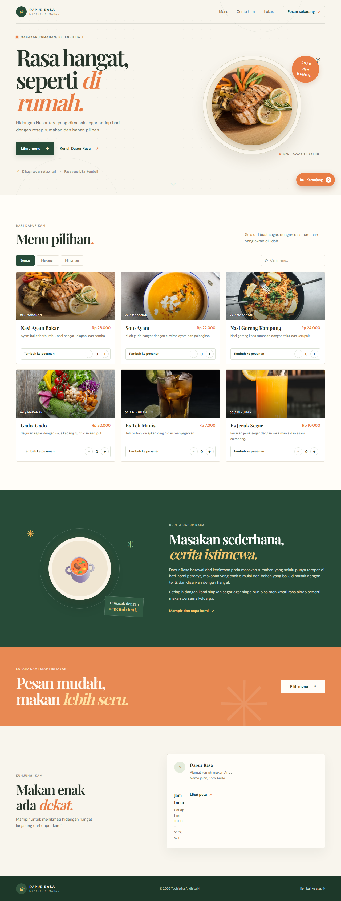
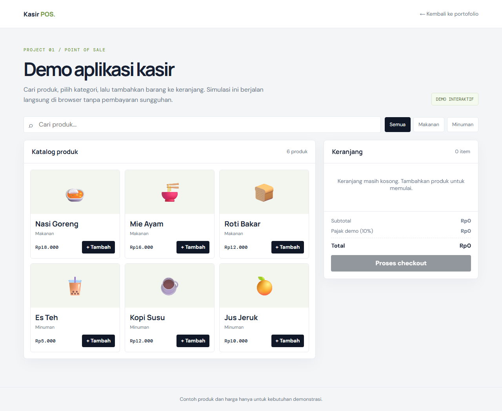
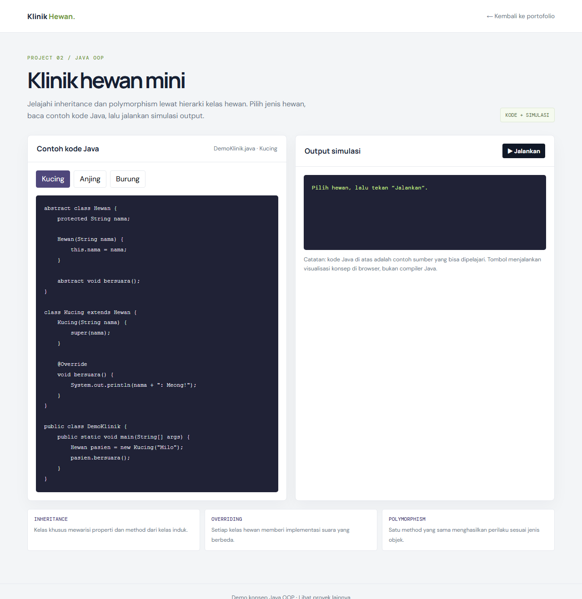

Website UMKM & restoran
Landing page, katalog menu, booking, dan desain yang membantu pelanggan cepat percaya.
JASA WEBSITE UNTUK UMKM & BISNIS
Saya membantu bisnis lokal, UMKM, dan restoran tampil lebih profesional online dengan website yang cepat, aman, dan mudah digunakan.
Website untuk bisnis yang ingin naik kelas.
web-development
AREA YANG SAYA TEKUNI
Mengubah ide
menjadi website.

Yudhistira Andhika Hermawanto
TENTANG SAYA
Saya seorang web developer yang tertarik membangun website dan aplikasi web yang responsif, fungsional, dan mudah digunakan.
Saya senang mengembangkan ide menjadi solusi digital, mulai dari menyusun tampilan yang nyaman digunakan hingga menghubungkan fitur dengan data. Saya terus belajar dan mengasah kemampuan melalui proyek-proyek pengembangan web.
LAYANAN
Landing page, katalog menu, booking, dan desain yang membantu pelanggan cepat percaya.
Dashboard transaksi, data stok, dan proses penjualan yang lebih rapi untuk operasional harian.
Desain yang lebih profesional, struktur informasi yang jelas, serta pengalaman mobile dan website yang lebih nyaman untuk pelanggan.
PROSES KERJA
Mengidentifikasi kebutuhan bisnis, target pelanggan, dan masalah yang ingin diselesaikan.
Menyusun struktur website, konten, dan alur pengalaman agar lebih mudah dipahami calon pelanggan.
Mengembangkan tampilan dan fitur dengan pendekatan yang cepat, rapi, dan mudah dikelola.
Melakukan pengecekan terakhir, menyajikan hasil kerja, dan membantu tahap awal pengelolaan website.
KARYA PILIHAN
Contoh karya yang paling relevan dengan layanan website untuk UMKM dan bisnis digital.

01 / UMKM WEBSITEWebsite responsif rumah makan dengan katalog menu, pencarian, filter kategori, keranjang pesanan, dan tombol WhatsApp untuk pemesanan cepat.
Lihat demo
02 / POS SYSTEMSistem manajemen inventaris dan Point of Sale berbasis web untuk membantu proses transaksi dan kontrol stok lebih rapi.
Lihat demo
03 / JAVA OOPAplikasi konsol yang menerapkan hierarki kelas dan konsep inheritance dalam pemrograman berorientasi objek.
Lihat demoPUNYA IDE MENARIK?
Saya membantu UMKM dan bisnis lokal membangun website yang cepat, profesional, dan siap menangani pelanggan.